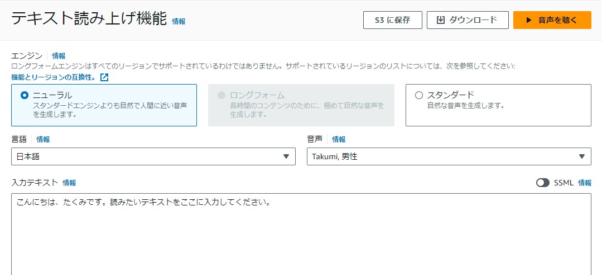

🤖 機械学習 / AI サービス CLF SAA
機械学習（ML：Machine Learning）とは、大量のデータを学習させ、そのパターンを基に新しいデータへの予測・判断を行う技術です。 AWSは特定タスク向けのフルマネージドなAIサービスを多数提供しており、サーバー管理なしで利用できます。
主なAIサービス
| サービス | 用途 |
|---|---|
| Amazon Comprehend | 自然言語処理。エンティティ認識・感情分析・キーフレーズ抽出など。 |
| Amazon Translate | テキストの翻訳。大量ドキュメントの翻訳や多言語対応に。 |
| Amazon Kendra | 機械学習を用いた企業向け検索。複数データソースを横断検索。会話文での検索も可。 |
| Amazon Transcribe | 音声認識（音声→テキスト）。議事録・字幕付けなど。 |
| Amazon Polly | テキスト読み上げ（テキスト→音声）。記事読み上げや自動応答に。 |
| Amazon Lex | 音声・テキストの対話型インターフェイス（チャットボット）構築。Lambda連携。 |
| Amazon Rekognition | 画像認識・動画分析。顔認識・物体検出などをAPIで利用。 |
| Amazon Textract | OCR（光学文字認識）。スキャン文書やPDFからテキスト・表を抽出（手書きも可）。 |

🔶 試験のポイント（CLF / SAA 頻出）
- 翻訳＝Translate、文章解析・感情分析＝Comprehend
- 音声→テキスト＝Transcribe、テキスト→音声＝Polly
- 画像・動画分析＝Rekognition、OCR＝Textract
- チャットボット＝Lex、企業内検索＝Kendra